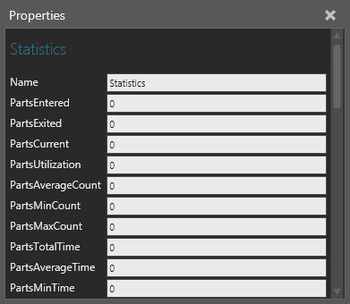
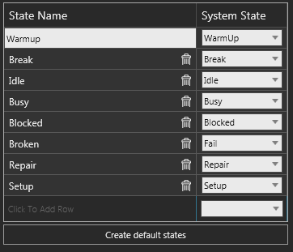

A Statistics behavior allows you to collect and report statistics generated by other behaviors in a component during a simulation.

Data collection can be cumulative or based on time, states and events. In order to report statistics a behavior needs to have a Statistics property or else you can use a Python Script to manually define data collection. By default, interval-based statistics are reported every 60 seconds in a running simulation.
| Name | Description |
| Name | Defines the name of the Statistics behavior. |
| PartsEntered | Indicates the number of components that have arrived at a container type behavior. |
| PartsExited | Indicates the number of components that have departed a container type behavior. |
| PartsCurrent | Indicates the current amount of components attached to a container type behavior. |
| PartsUtilization | Indicates the percentage of components attached to a container type behavior divided by the container's capacity. For example, a Component Container may have the capacity to hold 100 components but has only contained 50 components, resulting in 50 percent utilization of storage space. |
| PartsAverageCount | Indicates the average amount of components that have been attached to a container type behavior. For example, on average a sorting machine might have 10 components at any given time. |
| PartsMinCount | Indicates the minimum number of components that have been attached to a container type behavior at one particular time. For example, a shuttle conveyor might have a minimum of one component at any given time. |
| PartsMaxCount | Indicates the maximum number of components that have been attached to a container type behavior. For example, a robot gripper might have a maximum of three components at any given time. |
| PartsTotalTime | Indicates the total amount of time each component spent attached to a container type behavior. For example, a machine processes 10 components for 5 seconds with a feed in/out rate of 2~3 seconds, so the sum total of each component's duration in the machine added together results in PartsTotalTime. |
| PartsAverageTime | Indicates the average amount of time a component spent attached to a container type behavior. |
| PartsMinTime | Indicates the minimum amount of time a component spent attached to a container type behavior. |
| PartsMaxTime | The maximum amount of time a component spent attached to a container type behavior. |
| PartsIntervalEntered | Same as PartsEntered but for a recorded interval. |
| PartsIntervalExited | Same as PartsExited but for a recorded interval. |
| PartsIntervalCurrent | Same as PartsCurrent but for a recorded interval. |
| PartsIntervalUtilization | Same as PartsUtilization but for a recorded interval. |
| PartsIntervalAverageCount | Same as PartsAverageCount but for a recorded interval. |
| PartsIntervalMinCount | Same as PartsMinCount but for a recorded interval. |
| PartsIntervalMaxCount | Same as PartsMaxCount but for a recorded interval. |
| PartsIntervalTotalTime | Same as PartsTotalTime but for a recorded interval. |
| PartsIntervalAverageTime | Same as PartsAverageTime but for a recorded interval. |
| PartsIntervalMinTime | Same as PartsMinTime but for a recorded interval. |
| PartsIntervalMaxTime | Same as PartsMaxTime but for a recorded interval. |
| Utilization | Indicates the percentage a behavior was in a defined "setup" or "busy" state based on the elapsed time of a simulation. |
| TotalStateTime | Indicates the total amount of time a behavior was in any of its defined states based on the elapsed time of a simulation. |
| BreakPercentage | Indicates the percentage a behavior was in a defined "break" state based on the elapsed time of a simulation. Generally, a broken state should occur before a defined repair state. |
| IdlePercentage | Indicates the percentage a behavior was in a defined "idle" state based on the elapsed time of a simulation. |
| BusyPercentage | Indicates the percentage a behavior was in a defined "busy" state based on the elapsed time of a simulation. |
| BlockedPercentage | Indicates the percentage a behavior was in a defined "blocked" state based on the elapsed time of a simulation. Generally, capacity issues trigger a blocked state in a behavior. |
| FailedPercentage | Indicates the percentage a behavior was in a defined "failed" state based on the elapsed time of a simulation. |
| RepairPercentage | Indicates the percentage a behavior was in a defined "repair" state based on the elapsed time of a simulation. |
| SetupPercentage | Indicates the percentage a behavior was in a defined "setup" or "warm up" state based on the elapsed time of a simulation. |
| AverageActivePeriodTime | Indicates the average amount of time a behavior was in one of its defined states during a simulation. |
| IntervalUtilization | Same as Utilization but for a recorded interval. |
| IntervalTotalStateTime | Same as TotalStateTime but for a recorded interval. |
| IntervalBreakPercentage | Same as BreakPercentage but for a recorded interval. |
| IntervalIdlePercentage | Same as IdlePercentage but for a recorded interval. |
| IntervalBusyPercentage | Same as BusyPercentage but for a recorded interval. |
| IntervalBlockedPercentage | Same as BlockedPercentage but for a recorded interval. |
| IntervalFailedPercentage | Same as FailedPercentage but for a recorded interval. |
| IntervalRepairPercentage | Same as RepairPercentage but for a recorded interval. |
| IntervalSetupPercentage | Same as SetupPercentage but for a recorded interval. |
A component can have one or more states, which are defined by a Statistics behavior. A state is the condition of a component during a simulation at a given time. This is why each state has two dynamic properties: State<StateName>Percentage and State<StateName>IntervalPercentage. A state is mapped to a system state, which is a hardcoded, predefined condition for a component.

The Create default states property of a Statistics behavior allows you to create the following eight states.
| Name | Description |
| Blocked | Indicates a component is blocked, for example a capacity issue or parts are stuck in a process. |
| Break | Indicates a break in a component, for example a break in a process. |
| Broken | Indicates a failure in a component, for example something is broken and needs to be repaired. |
| Busy | Indicates a component is busy, for example executing a process. |
| Idle | Indicates a component is not busy, for example not waiting for a command or not executing a process. |
| Repair | Indicates a component is being repaired, for example fixing a broken part. |
| Setup | Indicates a component is being configured, for example a boot process or steps before executing a process. |
| Warmup | Indicates warm up time in a component. |
Notes: